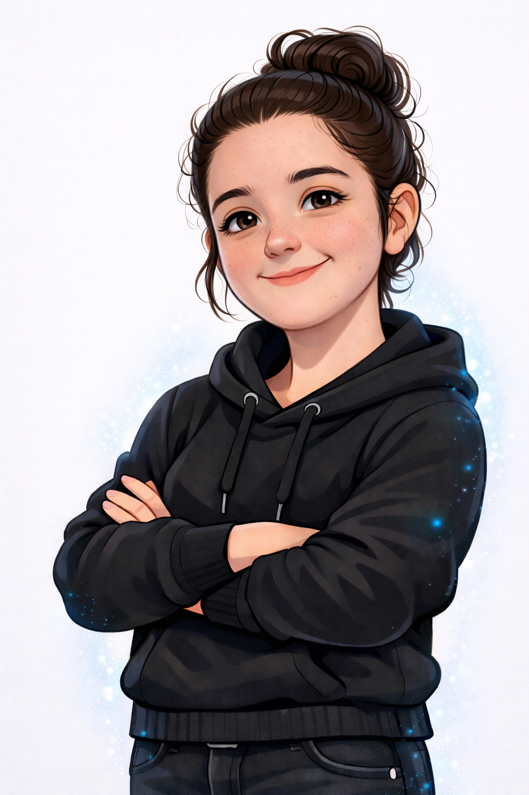

Mithril Consulting
Insight. Action. Impact.
An AI-native consultancy powered by five specialist agents working in a structured pipeline. We transform digital products through deep research, evidence-based design, rapid prototyping, and strategic communication.
Deep user research, competitive intelligence, and regulatory analysis form the evidence base for every recommendation.
Evidence becomes design, design becomes working prototypes. Every idea is tested and validated before delivery.
Strategic communication and executive leadership ensure solutions create measurable value for clients and their customers.
About Us
About Mithril Consulting
Mithril Consulting is an AI-native consultancy founded in March 2026 by Jennifer Carey. The organisation was created as part of the Customer Engagement and AI module (H9CEAI) at the National College of Ireland.
The name Mithril comes from J.R.R. Tolkien's The Lord of the Rings, where it describes the rarest and most precious metal in Middle-earth — lighter than silk yet stronger than steel.
Mithril Consulting is an agentic organisation — a new model of enterprise in which autonomous AI agents collaborate within structured workflows to deliver end-to-end outcomes. Unlike traditional consultancies that rely on large generalist teams, agentic organisations deploy specialist AI agents, each with deep domain expertise, orchestrated in pipelines where the output of one agent becomes the input of the next. This architecture enables faster delivery, greater consistency, and deeper specialisation than conventional team structures.
Agentic organisations represent a fundamental shift in how work gets done. According to McKinsey's 2025 research, they replace rigid hierarchies with flat networks of outcome-aligned agents, putting humans "above the loop" as supervisors and strategic decision-makers rather than executors. Multi-agent systems offer significant advantages over single-agent approaches — including greater flexibility, scalability, domain specialisation, and resilience through shared resource pools and continuous learning feedback loops. Microsoft's 2025 Work Trend Index found that 82% of leaders plan to deploy digital labour to expand workforce capacity within 12–18 months, with customer service, marketing, and product development leading adoption.
The Harvard Business Review describes this as the shift from the traditional consulting "Pyramid" to the AI-native "Obelisk" model — fewer hierarchical layers, greater leverage at each level, and delivery in hours rather than weeks. Agentic organisations can scale expertise without scaling headcount, maintain consistent quality through automated governance, and iterate rapidly because each agent retains institutional memory across engagements.
Mithril Consulting embodies this vision with five specialist agents forming a complete consulting pipeline, delivering research, design, prototyping, communication, and strategic oversight as an integrated engagement.
How We Work
Organisation Structure
Mithril Consulting operates as a sequential pipeline — a structured workflow in which five specialist agents each handle a distinct phase of the consulting engagement. The output of one agent becomes the input of the next, creating a cumulative chain where every deliverable builds on the evidence and work that preceded it.
This mirrors the standard consulting project lifecycle: Discovery & Research → Solution Design → Prototyping & Build → Go-to-Market → Executive Report. Unlike a traditional team where members work in parallel on loosely connected tasks, the pipeline ensures tight coherence — no design decision is made without research evidence, no prototype is built without a specification, no campaign is crafted without understanding the product, and no strategic recommendation is made without seeing the full picture.
Aragorn acts as the quality gate between every stage. After each agent completes their work, Aragorn reviews the output against five dimensions: craft quality, strategic coherence, actionability, cross-workstream integration, and client readiness. He issues an APPROVED or REVISE decision — if approved, the output passes to the next agent; if rejected, it is sent back to the originating agent with specific feedback for rework. This prevents weak work from propagating downstream and ensures each deliverable meets the standard before the next agent builds upon it.
Each handoff includes an explicit acknowledgment section where the receiving agent confirms what they received, what they will carry forward, and what they will build upon. This creates an unbroken chain of accountability from first insight to final recommendation.
Founder
About the Founder

Jennifer Carey is the founder of Mithril Consulting. She is currently pursuing a MSc in AI for Business at the National College of Ireland, where she is exploring how artificial intelligence can be applied to real-world business challenges — from customer engagement strategy to agentic organisation design.
Jennifer recently graduated with a First Class Honours degree in Human Resource Management from the National College of Ireland, bringing a strong foundation in organisational behaviour, people management, and strategic thinking. She also holds a QQI Level 5 in Art, Craft & Design, which fuels a creative approach to every project she undertakes.
With a deep interest in science fiction and fantasy literature and film, Jennifer often draws inspiration from fictional stories and characters. This creative instinct is woven into Mithril Consulting itself — from the Tolkien-inspired name to the team of agents modelled on characters from The Lord of the Rings. Each agent's personality, philosophy, and approach to work is rooted in the qualities that made their fictional counterparts memorable.
Jennifer believes that the best work happens at the intersection of analytical rigour and creative expression — and that AI, when designed thoughtfully, can amplify both.
Meet the Team
Five Specialists. One Pipeline.
Each agent brings deep expertise to a specific phase of the engagement. Inspired by characters from The Lord of the Rings, they combine domain mastery with distinct personalities that shape how they approach every challenge.

"Insight before invention."
Inspired by Saruman the White — the greatest of the Istari and the most learned scholar of his age, whose knowledge of lore, devices, and hidden patterns was unmatched in Middle-earth. Saruman channels that brilliance for discovery, using knowledge to serve others rather than to dominate them.
With PhD-level expertise in Human-Computer Interaction and Behavioural Science, and over eight years researching high-traffic digital platforms, Saruman specialises in qualitative analysis, sentiment analysis, journey mapping, competitive benchmarking, and root cause analysis. He is a practitioner of the MECE principle — ensuring every analysis is Mutually Exclusive and Collectively Exhaustive.
Insatiably curious, rigorously analytical, and intellectually honest, Saruman always asks "why?" and digs beneath surface symptoms to find root causes. He believes that customer complaints are gifts, that the best insights come from triangulating multiple sources, and that a weak research foundation leads to failed design. Every engagement starts with Saruman because every solution must begin with evidence. His research is reviewed by Aragorn before passing to Galadriel — ensuring the evidence base is strong enough to build on.

"See what could be."
Inspired by the Lady of Lothlórien — the mightiest Elf in Middle-earth, bearer of Nenya, whose gifts were foresight, preservation, and the ability to see into minds and hearts. Galadriel channels that vision to see what does not yet exist and shape it into reality, designing experiences that protect users from frustration and harm.
With an MSc in Human-Computer Interaction, a BA in Visual Communication, and over ten years designing consumer-facing digital products, Galadriel has led redesigns that achieved a 41% reduction in checkout abandonment. She is an expert in service design, accessibility (WCAG 2.2 AA), queue psychology, and the Double Diamond methodology.
Deeply empathetic and visionary, Galadriel always begins with the user's emotional experience. She believes the user is never broken — the design is. She sees the full journey, not individual screens, and treats accessibility as a baseline, not a feature. Every design decision links back to research, user needs, or established design principles. Her designs are reviewed by Aragorn before passing to Gimli — ensuring every specification is buildable, grounded, and complete. She is the reason Mithril's solutions feel intuitive and human.

"If it doesn't work, it isn't finished."
Inspired by Gimli, son of Glóin — Dwarf of the House of Durin, member of the Fellowship, Lord of the Glittering Caves. A master craftsman who carried armour like it was nothing, ran 45 leagues in four days, and fought in every battle. Gimli channels that spirit as a builder who values what works over what looks good on paper.
With a BSc in Computer Science, an MSc in Software Engineering, and nine years building production systems at scale for 2M+ concurrent users, Gimli is a full-stack engineer with expertise in React, Python, Node.js, cloud infrastructure, and AI agent orchestration. He has built ticketing infrastructure achieving 99.7% checkout completion under load.
Pragmatic and direct, Gimli follows Kent Beck's principle: "Make it work, make it right, make it fast." He builds something small and working immediately, then iterates. He catches edge cases others miss and takes full ownership of everything he ships. If a design can be built, Gimli builds it. If it cannot, he says so — honestly and early. His prototypes are reviewed by Aragorn before passing to Pippin — ensuring the build is solid, documented, and demo-ready. He is the reason Mithril's ideas become demonstrable reality.

"Make them understand. Make them care."
Inspired by Peregrin "Pippin" Took — the young Hobbit who grew from a curious troublemaker into a Knight of Gondor. His greatest gift was connection; he could befriend anyone. Pippin channels that gift, finding the human story in any situation and telling it in a way that moves people to action.
With an MA in Communications and over eight years in entertainment marketing and digital product launches, Pippin has led brand repositioning campaigns that increased customer trust scores by 23% and reduced churn by 15%. He is an expert in crisis communications, UX writing, and the StoryBrand framework.
Authentic and audience-first, Pippin never oversells or makes promises the product cannot keep. He understands the frustration and distrust that customers feel, and he believes that "the audience is the hero, not the brand." Every word he writes starts with the question: "Who is this for and what do they need?" He is the reason Mithril's solutions are not just built well, but communicated in a way that earns trust and drives adoption. His communications are reviewed by Aragorn before the final Executive Summary — ensuring every promise is backed by what was actually built.

"Guiding every agent toward the goal."
Inspired by Aragorn, son of Arathorn — Heir of Isildur, King of Gondor and Arnor, who united the Free Peoples through courage, wisdom, and the ability to bring others together toward a shared purpose. His power was not in doing everyone else's work — it was in seeing the whole picture and holding the team to a standard.
Aragorn serves as the quality gate between each agent in the pipeline. After every specialist completes their work, Aragorn reviews it and issues an APPROVED or REVISE decision before it passes to the next agent. This prevents weak work from propagating downstream. Once all four agents are approved, he produces the final Executive Summary / Operational Plan — the only deliverable informed by a full view of the entire pipeline.
With an MBA from INSEAD, 14 years in digital platform operations, and former management consulting experience at McKinsey, Aragorn brings strategic depth across customer experience transformation, GDPR, EU AI Act compliance, and ROI modelling. His governance framework adapts Asimov's Three Laws for agentic AI: customer safety is inviolable, human oversight is non-negotiable, and system integrity must never come at the expense of people. He is the reason Mithril's pipeline produces coherent, strategically sound, and ethically responsible outcomes.
Portfolio
Our Engagements
Mithril Consulting partners with organisations to transform their digital products through AI-driven research, design, prototyping, and strategy.

Customer engagement transformation — AI support agent, personalised discovery, resilient checkout, and mobile-first trust architecture.
Loyalty programme transformation — from failing rewards system to behavioural-science-driven engagement engine across 120 locations.
Mobile ordering experience & loyalty programme optimisation through AI-driven personalisation.

In-store digital experience & customer engagement strategy for convenience retail.
Case Study
Ticketmaster — Customer Engagement Transformation
Mithril Consulting was engaged to address Ticketmaster's critical customer experience failures — hidden fees, queue crashes, inaccessible support, and zero post-purchase engagement. Across 11 iterative pipeline cycles, our five-agent team has delivered a comprehensive solution spanning AI-powered support, transparent pricing, personalised discovery, social features, post-event engagement, and full EU regulatory compliance. The engagement produced a 26-screen interactive prototype with four AI features covering the complete customer lifecycle from discovery to post-event retention.
Key Deliverables
Six core systems designed, prototyped, and iteratively refined across 11 pipeline cycles.
ARIA
AI Resolution Intelligence Agent — a conversational support agent with visible tool calling, six query types (order status, transfer, refund, account, accessibility, human escalation), identity verification, and automated refund safeguards. EU AI Act Article 50 compliant.
EventMatch
Personalised event discovery engine with behavioural filtering, social recommendations ("Popular with your friends"), transparent AI reasoning, GDPR-compliant personalisation toggle, and all-in pricing from first display.
Fair Price Indicator
All-in pricing with contextual Fair Price tooltip — tappable badges (Great Value / Fair / Premium) showing how prices compare to similar events, transforming transparency into trust.
Confidence Bridge
Resilient queue-to-checkout experience with real-time position display, price guarantee from join, payment failure recovery, and contextual ARIA support integration.
Go Together
Social layer transforming solitary booking into collaborative experience — friend activity feed, group booking with shareable links, and granular privacy controls defaulting to off with explicit opt-in.
Your Year in Live
Post-event engagement suite inspired by Spotify Wrapped — 24-hour post-event recaps, experience ratings, similar event recommendations, and a swipeable annual retrospective with shareable summary cards.
Pipeline Phases
Research & Competitive Analysis
Comprehensive analysis of 120,000+ customer reviews across 11 research cycles, revealing systemic failures across checkout, authentication, support, social engagement, and post-purchase experience. Competitive benchmarking against seven rival platforms (AXS, SeatGeek, DICE, Eventbrite, StubHub, TicketSwap, TicketWeb) with 18 UI patterns catalogued. Identified nine core problems including the post-event void (zero engagement after purchase) and missing social layer (every competitor offers social features; Ticketmaster has none). Regulatory landscape mapped across GDPR, EU AI Act, FTC, and CMA at article level with a Compliance Implementation Sheet delivered for downstream agents.
Led by Saruman — Research AnalystUX Design & Experience Architecture
26 screens designed across four AI features: ARIA (conversational support with visible tool calls), EventMatch (personalised discovery with social filtering), Confidence Bridge (resilient queue-to-checkout), and the social & post-event suite (Go Together, Your Year in Live). Mobile-first design at 393×852px with thumb-zone CTAs and bottom-sheet interactions. Six design principles established, including "Personalisation with permission" and "Social by invitation, not default" — all social features opt-in with defaults off. TRUST-CRITICAL screen tagging system ensuring high-stakes screens cannot be simplified during build.
Led by Galadriel — UX DesignerWorking Prototype
Interactive 26-screen prototype built as zero-dependency HTML/JavaScript. ARIA features a six-tool agentic loop with visible tool invocations, identity verification, >€500 refund escalation safeguards, and EU AI Act disclosure on every interaction. EventMatch delivers personalised recommendations with social discovery ("Popular with your friends"). Fair Price Indicator provides contextual tooltips explaining price comparisons. Go Together enables group booking with shareable links and privacy controls. Your Year in Live delivers a swipeable four-card annual retrospective with shareable summary. 17 features built to spec, 8 simplified within flexible boundaries, 7 deferred with documentation. Three demo journeys: Discovery to Purchase, Queue Experience, and ARIA Support.
Led by Gimli — Prototype EngineerGo-to-Market & Trust Strategy
Four campaign concepts developed: "No Surprises" (transparent pricing with Fair Price context), "Your Year in Live" (annual retrospective as cultural moment, inspired by Spotify Wrapped's 200M+ user engagement), "Go Together" (social booking vs. WhatsApp coordination chaos), and "One Tap Away" (ARIA support for churned customers). Each campaign stress-tested against hostile scenarios. EU AI Act disclosure language crafted for all four AI features. Trust-rebuilding narrative acknowledges both old failures (hidden fees, queue crashes) and new gaps ("We built the app for transactions. We forgot it should be for experiences."). Seven-segment audience mapping across the full customer lifecycle with quantified KPIs.
Led by Pippin — Communications SpecialistExecutive Report & Strategic Assessment
Cross-iteration synthesis across all 11 pipeline cycles with full coherence review. ROI model: conservative €30M–50M Year 1 value with Confidence Bridge as the highest commercial impact driver. Estimated 30% Tier-1 support ticket reduction through ARIA. Your Year in Live projected to drive 15–25% organic app installs at December launch. Social features projected to increase group booking by 10–15%. Regulatory compliance validated across EU AI Act (Article 50 limited risk classification for all four AI features), GDPR (granular consent, mutual opt-in, right to deletion), and Asimov's Three Laws governance framework. DPIA flagged as required before production deployment. Pipeline quality scored 9.5/10 across all agents.
Led by Aragorn — Managing ConsultantCase Study
NorthSouth Coffee — Loyalty Programme Transformation
NorthSouth Coffee's loyalty programme was in crisis — monthly active users down 40%, a 58% app uninstall rate within 90 days, and a Net Promoter Score of -12. Mithril Consulting's five-agent pipeline diagnosed the root causes, designed a behavioural-science-driven solution, built the technical implementation, and delivered a full launch strategy — all within an 8-week timeline and £250,000 budget across 120 locations.
Loyalty Programme Root Cause Analysis
Deep diagnostic across all programme metrics: 310,000 registered members but only 48,000 monthly active users (15.5%). Reward redemption at 12% against an industry average of 35%. Push notification open rate at 4%. Identified five root causes, led by the "Points Desert" — a barren stretch between the welcome offer and the first earned reward where customers had no reason to return. Competitive benchmarking against Starbucks Rewards, Costa Club, Pret A Manger, Greggs, and Caffè Nero. Structured using Hook Model, BJ Fogg Behaviour Model, Jobs-to-be-Done, and Ishikawa root cause analysis.
Led by Saruman — Research AnalystNorthSouth Roast Rewards — Behavioural Architecture
Complete programme redesign grounded in 14 cited behavioural science principles. Five core solutions: a Milestone Ladder delivering rewards at 3, 5, 8, 12, and 20 visits; a "Beans" currency with visible progress tracking; Smart Lifecycle Messaging triggered by customer behaviour; gamification through Weekly Challenges, Visit Streaks with Streak Shields, and random Surprise & Delight Drops; and a "Second Cup" onboarding journey with Triple Points to drive second visits within 14 days. Five design principles established: Every Visit Counts Visibly, Surprise Before Expectation, Right Message Right Moment Right Person, Progress You Can Feel, and Premium-Casual Not Discount-Driven.
Led by Galadriel — UX DesignerTechnical Implementation & Architecture
Full technical specification for iOS (Swift) and Android (Kotlin) apps with FastAPI backend. Nine microservices: Bean Service, Milestone Service, Challenge Service, Streak Service, Surprise Drop Service, Lifecycle Service, Personalisation Service, Notification Service, and Analytics Service. API gateway with rate limiting and JWT validation. Infrastructure costed at £182,000 build + £1,200/month operational. Designed for 120-store deployment within 8-week timeline.
Led by Gimli — Prototype EngineerCommunication & Rollout Plan
Three-tier messaging hierarchy from hook to proof to detail. Core narrative: "Every cup should feel like progress." Tone of voice guide: warm, confident, never corporate. £68,000 communication budget allocation across digital, in-store, and social channels. Phased rollout strategy from staff beta through soft launch to full deployment. Failure mode planning and crisis response protocols. Campaign creative for app store, social media, in-store signage, and push notification sequences.
Led by Pippin — Communications SpecialistPipeline Synthesis & Board Recommendation
Full agent performance review (Researcher 7.5/10, Designer 9.0/10, Coder scored, Communicator scored). Projected outcomes: MAU from 48,000 to 80,000+, reward redemption from 12% to 32%, NPS from -12 to +22, app uninstall rate from 58% to 22%. ROI model: 3.56:1 on programme costs, 8.8:1 on communication spend. Board-level recommendation: approve and execute immediately — every week of delay costs approximately £66,000 in lost incremental revenue.
Led by Aragorn — Managing ConsultantGet in Touch
Start a Conversation
Let's discuss your challenge.
Whether you're facing customer experience failures, need AI strategy guidance, or want to explore how a specialist agent pipeline could transform your digital product — we'd like to hear from you.